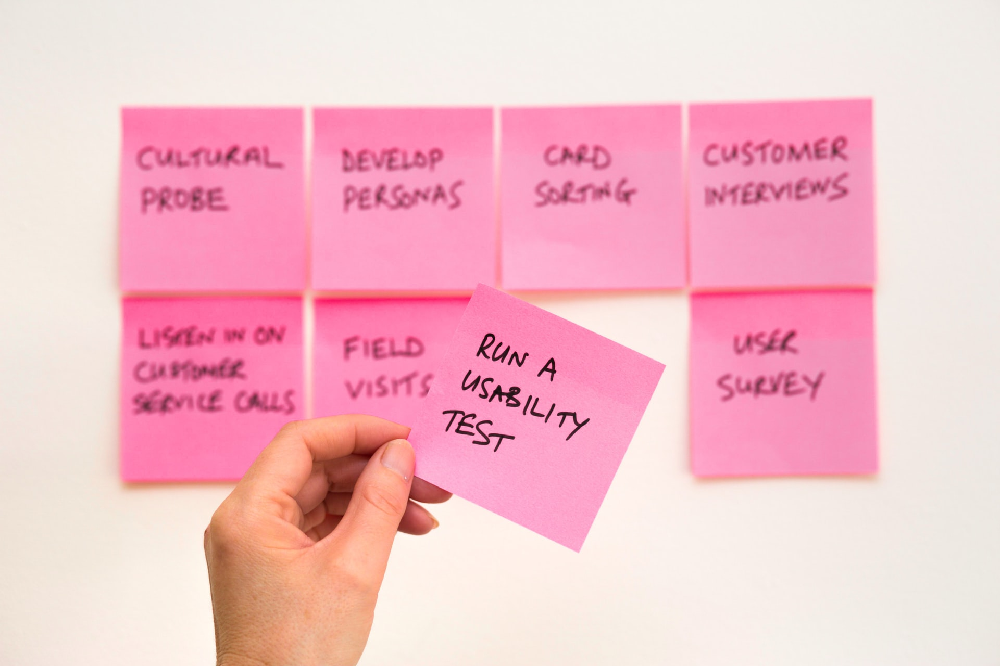
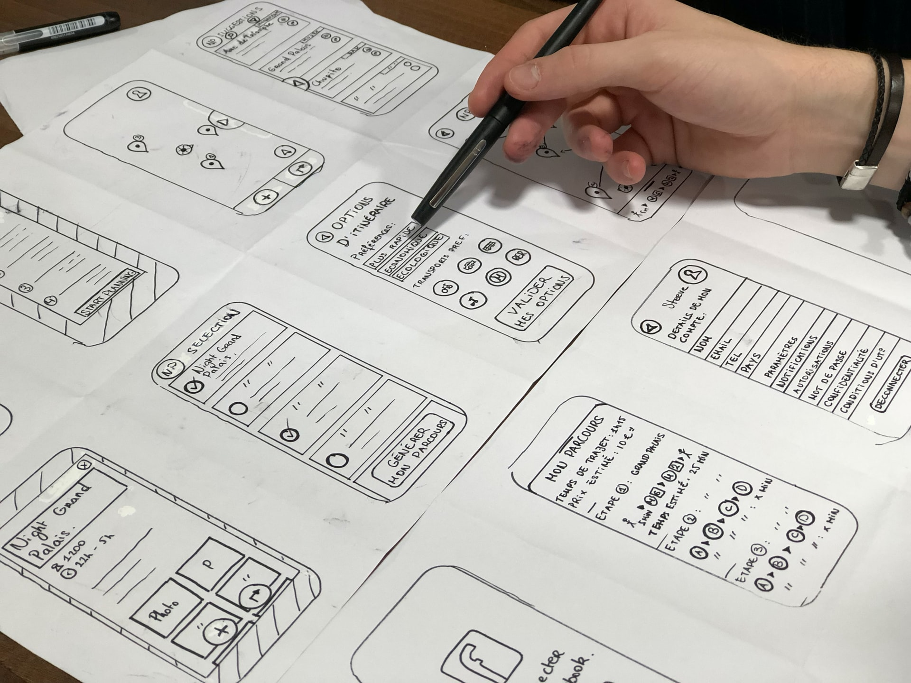

My UX Skills

User Research
Creating a research plan and identifying pain points conducting interviews with formulated scripts and translating valuable insights then synthesizing affinity diagram using Miro. Synthesize affinity diagram data into an empathy map.

User Interface Design
Learned to apply the principle of element design, usage of card sorting to help GUID web structure and ultimately leads to navigation UI. UI prototype and A/B testing to tweak the design and continuously improve the design.

Web Development
Using HTML and CSS to create commonly used tags and style layout with the use of many types of selectors. Writing functions with Javascript to program event behaviour and animation of the website to make them more interactive.